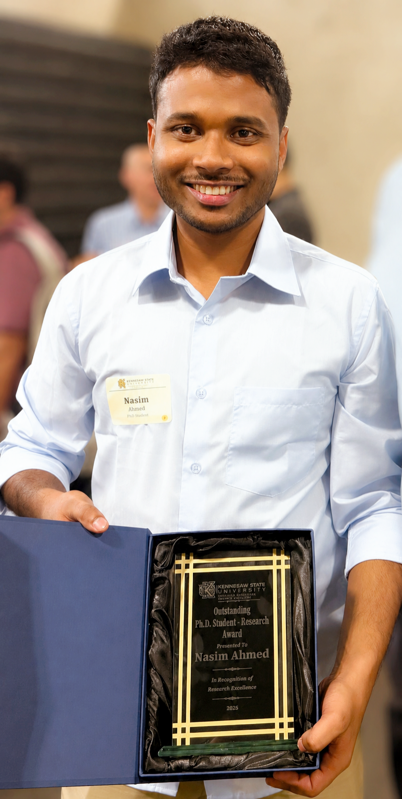
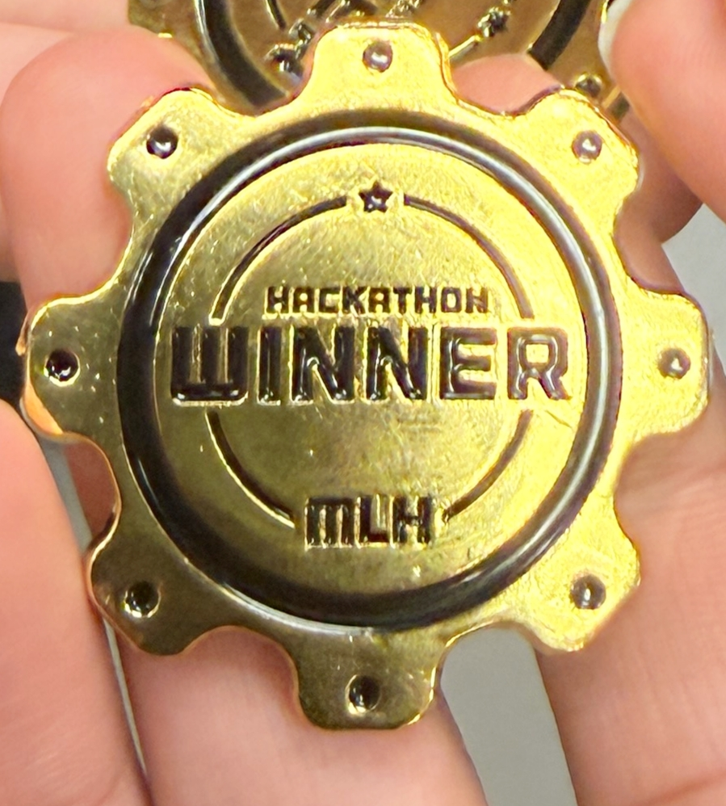
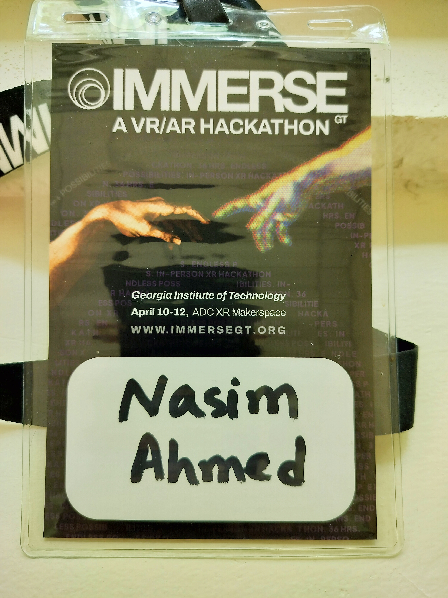
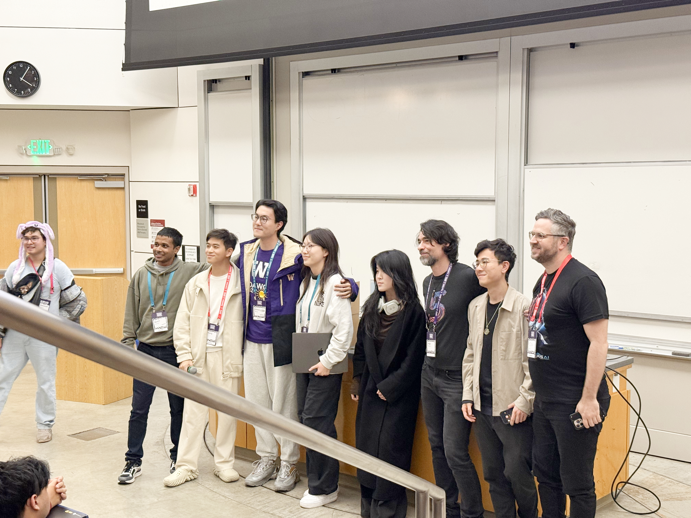
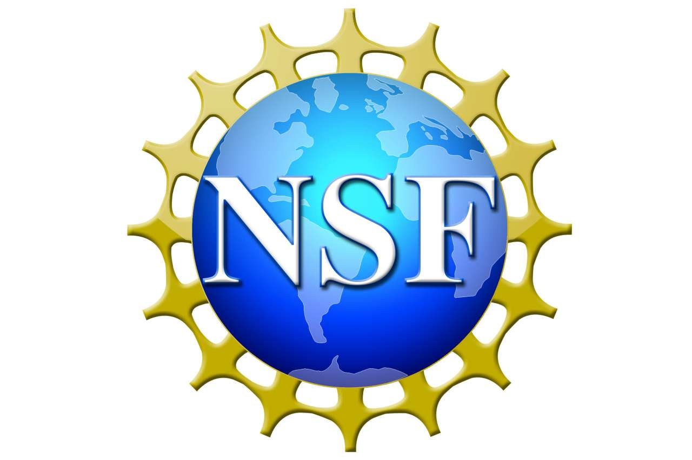

Peer review
ReviewerIEEE Conference on Virtual Reality and 3D User Interfaces (IEEE VR 2027)
ReviewerACM Symposium on Virtual Reality Software and Technology (VRST 2026)
Peer review, conference participation, mentoring, and recognition across research and immersive technology.
Contributions to scholarly venues, XR communities, and student development.
Former ICPC competitor and later coach/mentor, with extensive online-judge problem-solving experience and university-team training.
Research, academic, and immersive-technology recognition.

Department of Computer Science · Kennesaw State University.

Georgia Tech · HeistAR multiplayer augmented-reality game.

ImmerseGT 2026 · Snap Spectacles / augmented-reality track.

Stanford Immerse the Bay XR Hackathon · Anu / Digital Anubis.

IEEE ISMAR 2025 · support for Doctoral Consortium and cybersickness research participation.
Ranked among the top students in the Department of Computer Science and Engineering, SUST.